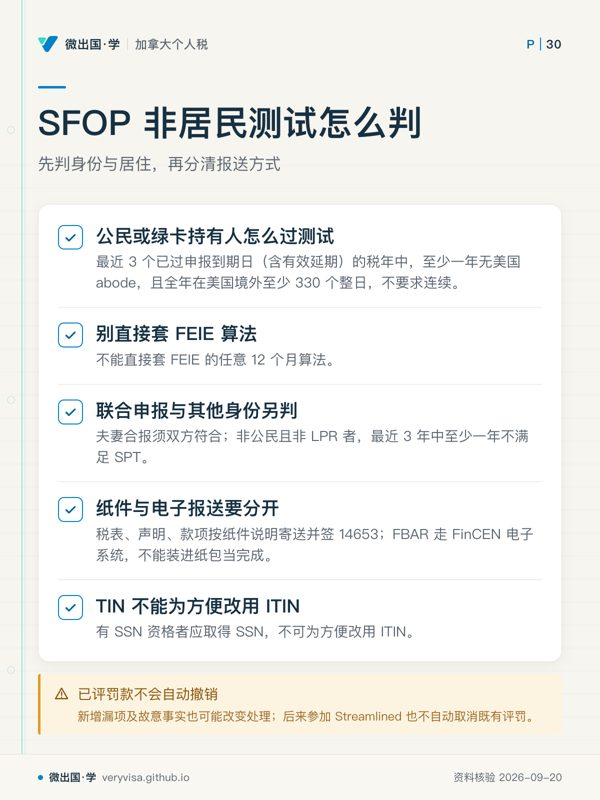
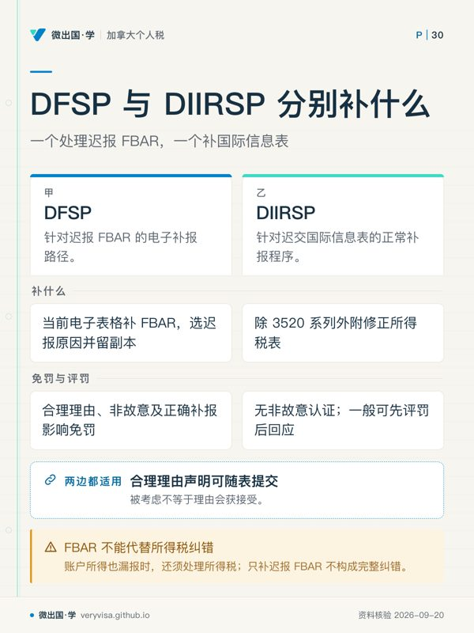

本页以2026 税年学习需求为入口；补报仍须逐年核对旧年度义务，不能用2026程序状态改写旧税年事实。
核实日期：2026-09-08。申报义务按各实际年度判断；2026年程序页面与考试口径历史分列。VDP拟议改版和DFSP公众链接状态须在实际提交前复查，复核日2026-10-15。
多年没报美国税，先盘点每个年度究竟缺什么：所得税、境外信息表、银行法下的FBAR可能分别缺漏。加拿大已缴税可以影响美国税额，却不能直接证明美国无需申报。本页讲补报路径的条件和效果，个人是否构成故意以及是否能作非故意证明，要根据完整事实判断。
一、制度设计与底层逻辑
美国公民和居民原则上申报全球所得，但1040仍有收入门槛和特殊申报触发条件，信息表也有各自范围。不能写成每个公民无论收入和资产都须每年交齐所有表。外交豁免等出生国籍例外、条约非居民与绿卡身份终止须另核，护照过期或居住加拿大不自动结束税务义务。
补报程序提供特定处理条件，不等于全部历史结案。Streamlined不发收件确认，也不签closing agreement；按常规选案仍可能审查，真实性、完整性及资格仍可核验。DIIRSP是按正常程序补交信息表，同样没有全部旧年度“翻篇”的保证（IRS（1、2））。
所得税一般评税期为3年，法定重大漏报可延至6年，未报税年度通常不起算。漏报境外金融资产相关所得超过5000的6年规则与8938资产申报门槛分开；6501(c)(8)的信息缺失延长期在合理理由且非故意疏忽时可能限相关项目。FBAR民事评罚6年通常从申报违法发生日计，即对应到期未报等违法时间，不是账户交易发生日（Cornell Law School Legal Inf…（1、2）、irs.gov）。
二、现行补报路径与2024—2026对照
2.1 Streamlined：先核非故意及居住测试
非故意包括疏忽、错误或善意误解；没有藏账户并不足以单独证明。IRS如已就任何税年开始民事稽查，或正在刑事调查，不能参加，稽查是否涉及境外资产不改变这一点。普通通知不能不分性质一律等同已开始稽查（IRS）。

美国公民/LPR的SFOP非居民测试是最近3个已过申报到期日（含有效延期）的税年中至少一年无美国abode、且全年在美国境外至少330个整日，不要求连续；不能直接套FEIE任意12个月算法。夫妻合报须双方符合；非公民且非LPR另按最近3年中至少一年不满足SPT判断（IRS）。
SFOP补最近3年完整税表及所需信息表，另电子补最近6年到期FBAR，签14653，并缴足税及利息。只有具资格并遵守全部说明时才享指定免罚；已评罚款不自动撤销，新增漏项及故意事实也可能改变处理。税表、声明和款项按纸件说明寄送；FBAR走FinCEN电子系统，不能装进纸包当完成。
不满足该非居民测试者再核SDOP资格：最近3个须申报年度已经报过税，有境外金融资产所得漏报等条件，不能拿它普遍补从未提交的1040。SDOP通常3年修正税表加6年FBAR，并缴税、利息及5%杂项境外罚金。罚金按这两个覆盖期间内每年的受罚资产年末合计，取最高一年；资产是否受罚按该年FBAR/8938遗漏或所得漏报判，不能把全部合规境外资产一概加入，也不能取每个账户各自峰值相加（IRS）。
须用正确TIN；有SSN资格者应取得SSN，不可为方便改ITIN。只有无SSN资格且尚无ITIN者可随材料附完整ITIN申请。以前自行补报不当然排除Streamlined，但已经评出的罚款不因后来参加自动取消。
2.2 DFSP：公众链接与实际程序分开
旧公众说明页返回404，现行IRM4.26.16.3.11仍列迟报FBAR步骤（IRS）。依漏报年度指引核义务，用当前电子表格选择迟报原因、说明并留副本。合理理由、非故意及正确补报影响是否免罚；账户所得也漏报时还须处理所得税，不能用补一张FBAR代替完整纠错。链接失效本身不足以判程序撤销。
2.3 DIIRSP：正常补表，不是自动免罚
目前公众页适用于识别到迟交信息表、未在IRS民事稽查或刑事调查中、且未被IRS就该迟交事项联系的人，要求按正常程序补报。页面没有把“1040一直准时报且所有税已付”写成统一入口，也没有Streamlined式非故意认证要求（IRS）。
除3520/3520-A按各自说明外，其他迟交国际信息表附修正所得税表。合理理由声明可随各表提交；一般可能先评罚再要求回应，3520/3520-A现行页特别说明会在评罚前考虑所附声明，且要求首页标明附有声明。考虑声明不保证接受理由。修正表也可能按常规选案受审。
2.4 RPFC：六年税额和完整资格
前公民救济可以先规划，完成提交却须国籍丧失证明CLN。适用2010-03-18之后弃籍，且从未以美国公民/居民身份报过所得税的人；还须非故意、前5年平均净所得税不超过弃籍年度线、净资产在弃籍及提交两时点都低于2000000、弃籍当年加前5年共6年的美国联邦税合计不超过25000。该合计按适用扣除抵免后算，不含877A税、利息罚款；不是加拿大税单的五年总额（IRS）。
符合全部条件并提交6年完整报表、8854和证明等，才能取得该程序的免税免罚效果及非covered处理。FBAR属于Title31，独立核申报；其遗漏本身不等于IRC五年合规认证必然失败，也不以FBAR作为RPFC资格测试。已历年报1040者不能仅因低资产套用这个从未申报者程序。
| 项目 | 2024考试口径/历史口径 | 2025适用口径 | 2026核实口径 | 状态及出处 |
|---|---|---|---|---|
| SFOP指定罚款减免 | 具资格及完整遵守时0% | 同左 | 同左，仍须税及利息 | 现行；IRS |
| SDOP杂项罚金 | 受罚资产年度末合计峰值5% | 同左 | 同左，非全部境外资产 | 现行；IRS |
| Streamlined覆盖期 | 3年税表、6年FBAR | 同左 | 同左，非永久结案 | 现行；IRS |
| RPFC净资产严格小于 | 2,000,000 美元（2024 税年；已生效；官方公布值） | 2,000,000 美元（2025 税年；已生效；官方公布值） | 2,000,000 美元（2026 税年；已生效；官方公布值） | 现行；IRS |
| RPFC六年美国税不超过 | 25,000 美元（2024 税年；已生效；官方公布值） | 25,000 美元（2025 税年；已生效；官方公布值） | 25,000 美元（2026 税年；已生效；官方公布值） | 现行；IRS |
| DIIRSP免罚 | 历史考试口径已记不自动免 | 不自动免 | 不自动免；3520/A声明评罚前考虑 | 当前程序；IRS |
| DFSP | 考试口径列独立程序 | 历史沿革按当期核 | IRM仍列步骤；旧公众页404 | 当前执行手册；IRS |
2.5 VDP与自行补报
IRS刑事调查VDP用于故意不合规、面临刑事风险者；及时、真实、完整披露可能降低被建议起诉的风险，不能保证刑事豁免。官方建议专业或法律顾问；不能把“必须税务律师代理”冒充统一法律资格。现行步骤先14457 PartI预审，收到preclearance后45日内递PartII以判断初步受理，二者不能倒置（IRS Criminal Investigation）。
2025-12-22公布的改版征求意见，现行页仍标proposal，并称在最终实施前不产生新权利。其拟议3个月完成申报缴付、罚款框架及转换意向说明不是2026已实施规则。页面仍保留的征求意见字样也不代表2026-03-22截止期尚未到；实际办理须核是否后续正式实施。
Quiet disclosure只是自行补交或修正的做法，从来不是一个在2009年被终止的独立正式IRS计划。不能把它和2009离岸披露计划混为一谈。正常补报不提供项目优惠保证，但合理理由等一般法定救济仍须依法判断。
三、实际办理顺序
先逐年列所得、外国账户及实体权益、居住身份、原报表和机关来函。根据各当年条件判断1040、FBAR、8938、3520、5471、8621等，不把加拿大注册账户名称直接等同美国信托结论；us-intl-03已区分现行豁免和拟议小额信托条款。
接着在完整事实下判非故意、各路径居住及既往申报条件。SFOP和SDOP并非人人二选一，不合两者可能应正常补报或核其他路径。加拿大CRA来函不会自动构成IRS稽查，但须各自核状态及申请条件。
整理历年NOA、T单、账单及交易税基。工资等全年均匀取得收入在适当情况下可用平均汇率；资产交易通常按各交易日，FBAR/8938估值按其规定年末汇率。现金制外国税抵免通常按缴税日，权责制另按514的一般规则和例外；收入换算不能与外国税换算混成一条“现金制一律禁止平均”规则（IRS、irs.gov）。
按所选程序分别交税表、信息表、电子FBAR及声明，保留日期和版本。Streamlined不主动确认且无结案协议，不能以沉默宣告接受。随后年度按正常到期日履行；新发现差错依实际程序修正。
四、与加拿大自愿披露的关系
加拿大2025-10-01起VDP分Unprompted/Prompted，但一般教育信未必使申请变Prompted；须看针对性接触等标准。Unprompted通常100%罚款、75%利息减免；一般国内材料期6年、涉外国资产或所得10年，特殊事实可能须更早材料，减免权限期间也须另核（CRA）。
两国入口、覆盖期和效果不同。加拿大VDP不免本金税；美国RPFC符合条件可免相关税；不能概括为两国一律只免罚且取得全面结案。材料可协调准备，申报时间须按各程序决定，不能写成法律要求必须同日或同时申请。
五、历史变化与证据界限
Streamlined于2012年推出、2014年扩展并取消历史1500税额门槛及风险评估；OVDP在2018-09-28关闭。这些已终止或改版程序不等于quiet disclosure曾是官方计划（IRS）。DIIRSP当前明确不自动免罚；旧考试口径关于2020年调整只能说明历史，不替代当前3520/A评罚前考虑声明的操作说明。
截至本次核实，DFSP执行手册仍在，VDP改版仍标拟议。这不能组合推导为“补报渠道持续全面收紧”，更不能用失效链接制造已经取消程序的结论。
六、本地情景：先验证条件再下结论
陈女士幼年移居加拿大，多年没报美国税。先按每年收入和账户判断实际义务，再审非故意事实及最近3年SFOP居住测试；长期在加拿大生活是证据，不是自动合资格印章。若具资格并完整补3年税表、6年FBAR和税息，可享指定免罚；加拿大已缴税不保证美国税必为零。
林先生收到CRA自雇收入审查信。它本身不关闭美国Streamlined入口；另核IRS是否启动任何税年的稽查或刑事调查，以及居住、收入遗漏、原报表及非故意条件。不能把“尚无IRS联系”直接当全条件已满足。
王先生拟弃籍，净资产示例1800000，但只提供加拿大缴税数字。现有材料不能判RPFC合格；应先算弃籍当年加前5年共6年的美国税，再核从未申报、两时点净资产、平均税负和非故意等。可先备表与测算，取得CLN后才能完成该程序提交。净资产不超线不保证满足877A的其他测试或RPFC全部条件。
七、常见错报与术语
| 概念 | 自查方法 |
|---|---|
| SFOP非居民测试 | 公民/LPR三年中至少一年全年330整日且无美国abode；夫妻合报双方符合 |
| SDOP罚金资产 | 逐年核哪些资产因表或收入遗漏受罚，再取年度末合计最高值 |
| Non-willful / 非故意 | 看全部事实和善意误解，不以没有隐匿一条事实替代认证 |
| Reasonable cause / 合理理由 | 属具体救济条件；提出声明不等于已被接受 |
| Closing agreement / 结案协议 | Streamlined不签此协议，DIIRSP也没有全部历史结案承诺 |
| RPFC | 六年美国税、从未申报及其他完整资格，不是五年加拿大税 |
| Quiet disclosure | 自行补报做法，没有所谓2009年前官方项目身份 |
| FBAR时效 | 通常从申报违法日计6年，与所得税未报则不起算不同 |
来源
美国官方页面：境外简化程序 SFOP（IRS）· 境内简化程序 SDOP（IRS）· Relief Procedures for Certain Former Citizens（IRS）· 迟交国际信息申报表程序（IRS）· 迟交 FBAR 申报程序现状核查（IRS）· Streamlined 总览页（IRS，即 IRS）· Criminal Investigation VDP（IRS Criminal Investigation）。
法条：26 U.S.C. §6501 评税时效（Cornell Law School Legal Inf…）· 31 U.S.C. §5321(b) FBAR 罚款评定期限（Cornell Law School Legal Inf…）。
加拿大官方页面：CRA 自愿披露计划 2025-10-01 新规（CRA（1、2））。汇率折算：IRS Publication 514（IRS）· CRA Line 40500（CRA）。
本页知识卡
不看正文也能拿到这一节的核心内容：先看导读，再看图。点图放大，左右翻页。
- 先看先比较入口门槛，再看报表形态与代价差异。
- 易漏普通通知不必然等同已开始稽查；通知性质要另行判断。
- 下一步去路线核对自身入口；向持牌专业人士确认稽查状态。

- 先看先锁定身份类别，再逐项核对居留事实与递交动作。
- 易漏个人纳税识别号只在无社会安全号资格且尚未取得号码时，可随材料一并申请。
- 下一步去知识卡做身份分流；请持牌专业人士核验出入境记录。

- 先看先判漏项属于账户申报还是跨境信息表，再看补交路径。
- 易漏旧公众说明页返回 404 只代表链接失效，不足以据此认定程序撤销。
- 下一步去路线确认缺表类别；请持牌专业人士审查说明材料与所得税影响。